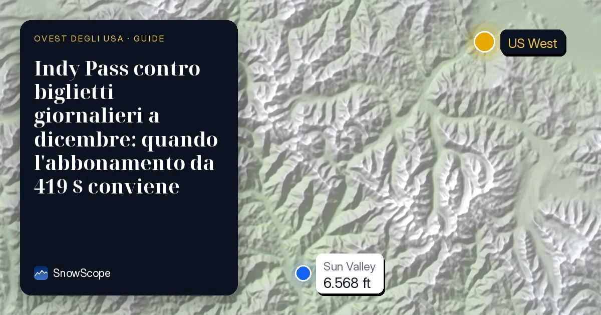

Indy Pass contro biglietti giornalieri a dicembre: quando l'abbonamento da 419 $ conviene
L'Indy Pass vende un'idea semplice: due giorni in ciascuna di oltre 300 stazioni sciistiche indipendenti. Per un viaggio di dicembre, la domanda è se due o tre piccole stazioni con vere probabilità di neve battano i biglietti giornalieri. Abbiamo fatto i conti per sette stazioni Indy della nostra lista di dicembre.
Le previsioni neve in tempo reale per US West nell'app SnowScopeAltezza neve, allerte powder e mappa 3D, gratis.
Quanto costa l'abbonamento
Per il 2026-27, l'Indy Base Pass costa 419 $ per gli adulti e dà due giornate intere (o notturne) in ogni stazione aderente, con date di esclusione. L'Indy+ Pass costa 469 $, con gli stessi due giorni per stazione ma senza date di esclusione. Se il viaggio di dicembre cade nelle festività, la questione delle esclusioni conta più della differenza di prezzo tra le due formule.

Due giorni, pagati invece alla cassa
Ecco quanto costano due giorni ai prezzi giornalieri verificati, calcolo nostro. Loveland: 120 $ con i biglietti online di inizio stagione, ma 318 $ alla cassa dal 14 dicembre. Brundage: 130 $ al prezzo di partenza. White Pass: 138 $ al suo prezzo online più basso fuori dai giorni di punta. Sunlight: 148 $ al prezzo di partenza. Beaver Mountain: 150 $. Montana Snowbowl: 156 $ nei giorni feriali, 170 $ nel weekend. Snow King: 200 $ al prezzo di partenza.
L'abbonamento non conviene quindi su una sola stazione. Ai prezzi più bassi comincia a convenire dalla terza stazione visitata per due giorni; con prezzi da weekend, di punta o da cassa, due stazioni possono bastare.
Quali stazioni Indy convengono a dicembre
La neve conta quanto il prezzo. Nel nostro storico, la quota di inverni con almeno 20 in (50 cm) a metà montagna il 15 dicembre è dell'87 % a White Pass, Snow King e Brundage, 83 % a Montana Snowbowl, 72 % a Sunlight, 67 % a Loveland e 57 % a Beaver Mountain.
Un road trip Indy di dicembre nel Nordovest e nelle Rocciose settentrionali, White Pass, Brundage, Snowbowl e Snow King, si colloca sul lato più sicuro. Beaver Mountain e Loveland conviene tenerle per fine dicembre, quando le loro probabilità migliorano.
Quando vincono i biglietti giornalieri
Se si scia uno o due giorni in una sola stazione, i biglietti giornalieri vincono facilmente: un lunedì a Montana Snowbowl costa 78 $, un giorno feriale a Beaver Mountain 75 $. E a Loveland, il biglietto online di inizio stagione a 60 $ fino al 13 dicembre è un affare migliore di qualsiasi giorno di abbonamento che gli si potesse assegnare.
L'Indy Pass vince per lo sciatore che si muove: più stazioni, due giorni ciascuna, lungo tutto l'inverno. Dicembre è un buon mese per iniziare a usarlo, non l'unica ragione per comprarlo.
Consigli per sciatori
- Contate prima le vostre uscite: una sola stazione, biglietti giornalieri; tre stazioni o più, valutate l'abbonamento.
- Date di festività? Controllate la lista di esclusione Indy o pagate il supplemento per Indy+.
- Abbinate in un solo viaggio le stazioni Indy più sicure a dicembre (White Pass, Brundage, Snowbowl, Snow King).
- Tenete i giorni online a 60 $ di Loveland per inizio dicembre e usate l'abbonamento altrove.
Riferimenti e crediti
- White Pass, online day tickets 2026/27 (official) skiwhitepass.com/online-day-ticket-sales
- Beaver Mountain, tickets and passes 2026-2027 (official) www.skithebeav.com/tickets-and-passes/
- Snow King Mountain, winter day tickets (official store) store.snowkingmountain.com/en/catalogue/category/500-winter-lift-tickets/510-day-ticket_447/
- Loveland Ski Area, lift tickets 2026-27 (official) skiloveland.com/lift-tickets/
- Brundage Mountain, daily lift tickets (official) brundage.com/daily-lift-tickets/
- Montana Snowbowl, lift tickets 2026/27 (official) montanasnowbowl.com/sbblog/lift-tickets/
- Sunlight Mountain Resort, lift tickets (official) sunlightmtn.com/lift-tickets/
- Indy Pass, shop 2026-27 (official) www.indyskipass.com/shop
Su questi numeri
Neve attuale: la mappa SnowScope. Impianti, piste e quote: mappatura OpenSkiMap. Prezzi: le pagine ufficiali elencate qui sotto, lette il 13 novembre 2026; i prezzi dinamici cambiano con la data e la domanda.
Cita questo articolo
Per ricerca, didattica o stampa: numeri e grafici sono liberamente riutilizzabili con licenza CC BY 4.0 citando così.
SnowScope (2026), Indy Pass contro biglietti giornalieri a dicembre: quando l'abbonamento da 419 $ conviene, https://snowscope.app/blog/it/2026/11/indy-pass-vs-day-tickets-december-2026.html, consultato il 2026-11-14
SnowScope (Atlas Labs). (2026, November 14). Indy Pass contro biglietti giornalieri a dicembre: quando l'abbonamento da 419 $ conviene. SnowScope snow reports. https://snowscope.app/blog/it/2026/11/indy-pass-vs-day-tickets-december-2026.html
BibTeX
@misc{snowscope2026indypassvsdayticketsdece,
author = {{SnowScope (Atlas Labs)}},
title = {Indy Pass contro biglietti giornalieri a dicembre: quando l'abbonamento da 419 $ conviene},
year = {2026},
month = nov,
howpublished = {\url{https://snowscope.app/blog/it/2026/11/indy-pass-vs-day-tickets-december-2026.html}},
note = {Published 2026-11-15 09:34 UTC; accessed 2026-11-14}
}· CC BY 4.0 · Metodi, dati e strumenti →
Segui US West
Gratis: un messaggio quando arriva la neve e il meteo ogni mattina.
Altri bollettini neve

Brundage Mountain offre neve affidabile all'inizio della stagione vicino a McCall, Idaho. La profondità tipica a metà montagna raggiunge 77 cm entro la metà di dicembre, con skipass a partire da 65 dollari in giorni selezionati.

Sunlight vicino a Glenwood Springs affronta una scommessa di inizio stagione a dicembre. A metà mese puoi aspettarti 67 cm a mezza montagna, anche se solo il 72% degli inverni raggiunge quella profondità.

Beaver Mountain offre forfait a prezzo fisso di 75 dollari senza maggiorazioni nei giorni di punta. L'inizio di dicembre è spesso scarso; punta alla metà del mese o dopo, quando la neve è più affidabile.